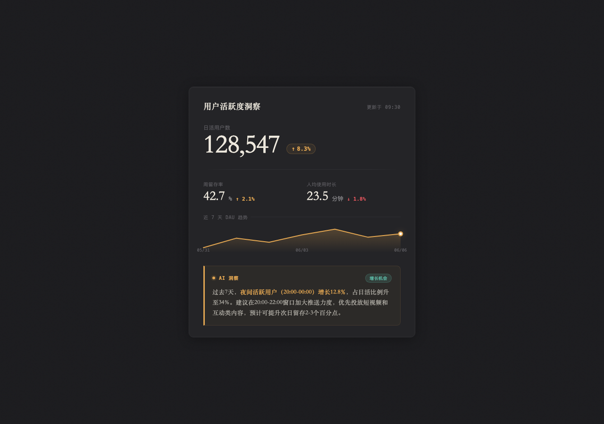
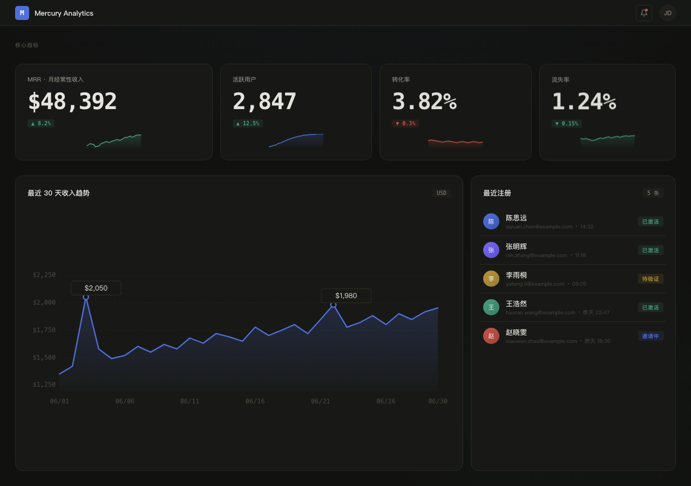
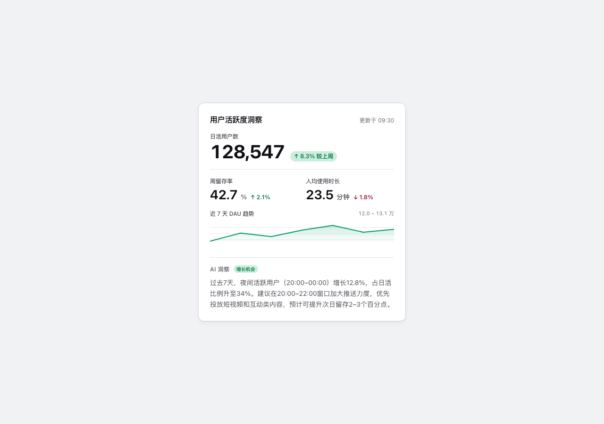
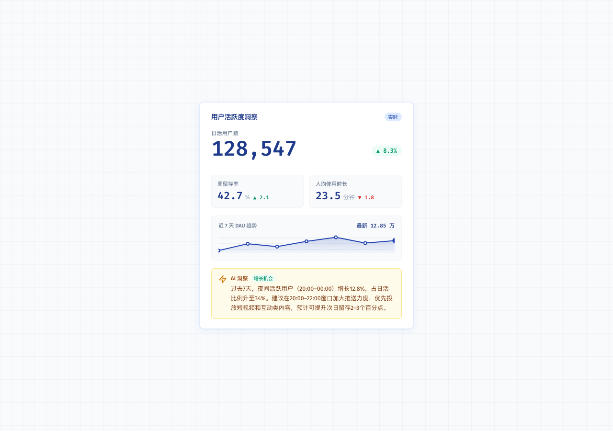
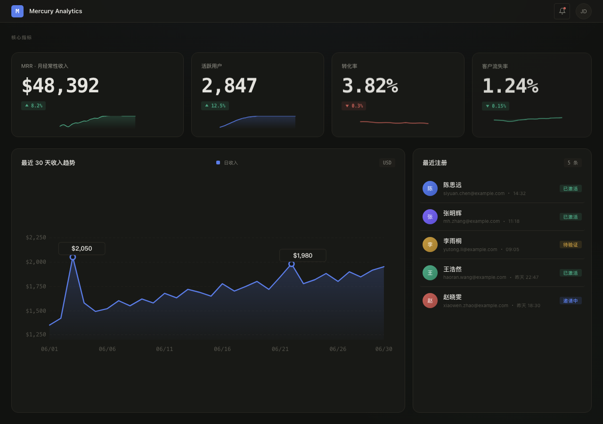

总览：三个 Skill 的本质定位
🎨 frontend-design
灵魂：调性。每次产出审美方向不同，拒绝收敛。
美学优先不可预测字体大胆氛围营造57 组字体搭配 / 无预设风格 / 单 accent 策略 / 暗色偏好
🔧 impeccable
灵魂：工程正确。代码质量、状态完整、a11y 规范是底线。
工程纪律a11y 系统OKLCH 色空间状态完整26 个命令 / 绝对禁令清单 / 色策略框架 / 亮色偏好
📐 ui-ux-pro-max
灵魂：系统化。161 条规则 / 67 种风格 / 完整设计推理链。
系统化推理链数据密度10 栈覆盖10 级优先级 / 57 组字体 / 161 色板 / 99 UX 准则
frontend-design 回答"长什么样"（美学方向），ui-ux-pro-max 回答"为什么这样设计"（设计推理），impeccable 回答"怎么做到位"（工程实现）。三者不是竞争，是同一流水线的三个工位。
frontend-design — 美学方向的定调者
核心哲学
"Choose a BOLD aesthetic direction and execute it with precision."
不是"做个好看的界面"，而是"选一个极端审美方向，然后执行到极致"。
大胆极繁和克制极简都可以——关键是有意图，不是有强度。
核心约束：永远不收敛到同一个风格。每次产出必须不同。
设计思维框架（必须分四步走）
1. Purpose 目的
这个界面解决什么问题？谁在用？什么场景？
2. Tone 调性
选一个极端：brutally minimal → maximalist chaos → retro-futuristic → organic/natural → luxury/refined → editorial/magazine → brutalist/raw → art deco → industrial...
3. Differentiation 记忆点
什么东西让人忘不掉？就一个东西。
美学执行指南（六大维度）
| 维度 | 要求 | 禁止 |
|---|---|---|
| Typography 字体 | 独特、有个性的字体选择。Display + Body 配对。意外的字体搭配。 | Arial、Inter、Roboto、系统字体、Space Grotesk（跨产出收敛） |
| Color 配色 | CSS 变量一致性。主导色 + 锐利 accent。大胆的不对称用色。 | 均匀分布调色板、紫色渐变白底、畏缩的配色 |
| Motion 动画 | 高影响力时刻：一次精心编排的页面加载（staggered reveals）胜过散落的微交互。CSS 优先。 | 散落无意义的微交互、无 reduced-motion 支持 |
| Spatial 空间 | 意外布局。不对称。重叠。对角线流动。打破网格。大量留白 OR 受控密度。 | 可预测的居中布局、等宽卡片网格、标准 SaaS 模板 |
| Background 背景 | 营造氛围和深度。渐变网格、噪点纹理、几何图案、分层透明、戏剧阴影、装饰边框。 | 纯色背景（除非极度克制风格需要） |
| Complexity 复杂度 | 匹配审美愿景。极繁 = 复杂代码+大量动画。极简 = 克制+精确+间距+字体。 | 审美方向和实现复杂度脱节 |
实际 Case 中的设计指纹


它提供的是不可预测性。两次调用，同样的 prompt，会得到完全不同的审美方向。这在需要「跳出 AI slop 审美」的场景里是最大优势。
a11y 不系统（缺乏 skip link、aria-label 标注）；状态不完整（hover/focus/active 缺失）；工程细节靠自觉（没有 z-index scale、没有 reduced-motion 全量覆盖）。它不关心代码质量，只关心代码好不好看。
impeccable — 工程纪律的守护者
核心哲学
"Production-grade, not prototypes. Take no shortcuts. Don't stop until complete."
不是"检查一下代码"，而是"从工程角度保证交付质量"。26 个子命令覆盖 Build / Evaluate / Refine / Enhance / Fix / Iterate 六大类。 每次操作前必须加载对应的 reference 文件。有绝对禁令清单——某些模式被认为永远是错的。
四个硬性前置步骤（Setup）
四大设计纪律
Color 颜色纪律
• 正文对比度 ≥4.5:1 硬指标
• 占位符也要 4.5:1
• 灰字在有色底上 = 错
• 用底色自身色相的深色替代灰
• OKLCH 色空间（感知均匀 + P3 广色域）
Typography 字体纪律
• 行宽上限 65–75ch
• 层级 ratio ≥1.25
• 字体族 ≤3（display + body + mono）
• 相似字体不配对
• 无全大写正文
• text-wrap: balance on h1-h3
Layout 布局纪律
• Flexbox 1D / Grid 2D
• 语义 z-index scale
• 卡片是惰性选择
• 嵌套卡片永远错
• 用 repeat(auto-fit, minmax(280px,1fr)) 做免断点响应式
Motion 动画纪律
• 不动画 CSS 布局属性
• ease-out-quart/quint/expo
• 无 bounce / elastic
• reduced-motion 不是可选项
• 揭示动画不能 gate 内容可见性
• blur/backdrop-filter/clip-path 可用
Copy 文案纪律
• 无 em dash
• 无营销 buzzword
• 按钮 = 动词+宾语
• 链接文字独立有意义
• 每句话都在干活
Interaction 交互纪律
• Dropdown 在 overflow:hidden 里会被裁切 → 用 dialog/popover API 或 portal
• 键盘可达
• 状态可感知
绝对禁令清单（Match-and-Refuse）
- Side-stripe borders — 左侧/右侧 >1px 彩色边框做卡片强调。用完整边框、背景色或前置图标替代。
- Gradient text — background-clip: text 渐变文字。纯装饰，从不有意义。用单色+weight/size 强调。
- Glassmorphism as default — 装饰性玻璃态。极少情况有意义，永远不是默认。
- Hero-metric template — 大数字+小标签+梯度 accent。SaaS 陈词滥调。
- Identical card grids — 同尺寸图标+标题+文字卡片无限重复。这是 AI 的默认输出，不是设计。
- Eyebrow above every section — 每个标题上方的小大写标签。2023 年 AI 语法。一个故意的 brand kicker 可以，每个 section 都有就是 AI 脚手架。
- Numbered sections (01/02/03) — 每个 section 标号。当且仅当序号承载信息时才用。
- Text overflow — 长标题+大字号+窄网格 = 溢出。每个断点测标题。
颜色策略框架（四层递进）
新项目选色前必须选一种策略。这是 impeccable 独有的框架：
Restrained 染色中性色 + 单 accent ≤10%。产品默认；品牌极简。
Committed 一个饱和色承载 30–60% 表面。品牌默认；身份驱动页面。
Full Palette 3–4 命名色角色。品牌 campaign；产品数据可视化。
Drenched 表面就是颜色本身。品牌 hero 页；campaign 页。
提供工程质量的底线。不会主动做大胆设计决策（那是 frontend-design 的事），但能保证做出来的东西对比度达标、状态完整、键盘可达、动画不卡、z-index 不会乱。
审美上偏保守。系统字体栈缺乏个性。不会主动加氛围层（径向光晕、噪点纹理）。对「品牌个性」的感知弱于 frontend-design。需要外部注入美学方向。
ui-ux-pro-max — 设计系统的推理引擎
核心哲学
"Comprehensive design guide with reasoning rules. Searchable database with priority-based recommendations."
不是"教你做设计"，而是一个可搜索的设计知识库 + 推理引擎。 10 级优先级、7 个可查域（product/style/color/typography/ux/chart/landing）、10 个技术栈覆盖。 核心能力是根据产品类型推理出最合适的设计系统。
10 级优先级体系（关键决策树）
| P | 类别 | 严重度 | 核心检查项 | 反模式 |
|---|---|---|---|---|
| 1 | Accessibility | CRITICAL | 对比度 4.5:1 · Alt 文字 · 键盘导航 · Aria | 移除 focus ring · 无标签 icon-only 按钮 |
| 2 | Touch & Interaction | CRITICAL | 44×44px 最小触控 · 8px+ 间距 · 加载反馈 | 纯 hover 依赖 · 瞬时状态变化 (0ms) |
| 3 | Performance | HIGH | WebP/AVIF · 懒加载 · Reserve space (CLS<0.1) | 布局抖动 · CLS 超标 |
| 4 | Style Selection | HIGH | 匹配产品类型 · 一致性 · SVG 图标 | 混用 flat 和拟物 · Emoji 做图标 |
| 5 | Layout & Responsive | HIGH | Mobile-first 断点 · Viewport meta · 无横滚 | 横滚 · 固定 px 容器 · 禁用缩放 |
| 6 | Typography & Color | MEDIUM | Base 16px · Line-height 1.5 · 语义色 token | 正文 <12px · 灰上加灰 · 组件里裸 hex |
| 7 | Animation | MEDIUM | 150–300ms · 动效传达含义 · 空间连续性 | 纯装饰动画 · 动画 width/height · 无 reduced-motion |
| 8 | Forms & Feedback | MEDIUM | 可见标签 · 就近错误 · 辅助文字 · 渐进展示 | placeholder 即 label · 错误只在顶部 |
| 9 | Navigation | HIGH | 可预测返回 · Bottom nav ≤5 · Deep linking | 过载导航 · 破坏返回行为 |
| 10 | Charts & Data | LOW | 图例 · Tooltip · 无障碍色 | 纯颜色传递含义 |
P1 Accessibility > P2 Touch > P3 Performance > P4 Style。这意味着样式选择（P4）要让位于无障碍（P1）和触控（P2）。如果配色好看但对比度不够，改配色，不能放弃对比度。这个优先级体系是 ui-ux-pro-max 区别于「纯美学 skill」的根本原因。
工作流程：四步法
产品类型/受众/风格关键词
--design-system（必须）
--persist 写入文件
--domain 深入各维度
--stack 实现细节
可搜索域（7 个）
| 域 | 用途 | 示例关键词 |
|---|---|---|
product | 产品类型推荐 | SaaS, e-commerce, portfolio, healthcare, beauty |
style | UI 风格、颜色、效果 | glassmorphism, minimalism, dark mode, brutalism |
typography | 字体配对 | elegant, playful, professional, modern |
color | 配色方案 | saas, ecommerce, healthcare, fintech |
landing | 落地页结构、CTA 策略 | hero, hero-centric, testimonial, pricing |
chart | 图表类型、库推荐 | trend, comparison, timeline, funnel |
ux | 最佳实践、反模式 | animation, accessibility, z-index, loading |
设计系统输出格式（Master + Overrides 模式）
# --persist 后生成的文件结构
design-system/
├── MASTER.md # 全局 Source of Truth
└── pages/
├── dashboard.md # 页面级覆盖（覆盖 Master）
├── settings.md # 另一个页面的设计规则
└── landing.md # ...
提供设计决策的可解释性。不是"我觉得蓝色好看"，而是"因为这是 B2B SaaS 数据分析产品，根据推理规则 #XX，推荐 #1E40AF 作为主色，因为...". 这个推理链条让后续的迭代有据可依，也让设计系统可以跨会话复用。
设计选择偏「安全」。蓝色 (#1E40AF) 和琥珀色 (#D97706) 高频出现，缺乏 frontend-design 那种「意外的字体搭配」和「不对称布局」的个性。适合做 design system 的框架，但需要 frontend-design 在这个框架内做创意突破。
Case 对比 — 同一数据 × 三种设计哲学
两组 case。Case 1：三个 skill 独立生成同一份数据（用户活跃度洞察），看各自的"设计指纹"。 Case 2：用 pipeline 模式（ui-ux-pro-max 出设计系统 → frontend-design 实现 → impeccable 打磨），看三者如何协同。
Case 1 — 独立对比：同一 prompt，三种理解


Case 1 核心差异
| 维度 | frontend-design | impeccable | ui-ux-pro-max |
|---|---|---|---|
| 色调选择 | 暗色 | 亮色 | 亮色 |
| 色空间 | HEX | OKLCH | HEX |
| 主强调色 | 琥珀 #e2a652 | 青绿 oklch(0.58 0.18 165) | 蓝 #1E40AF |
| 字体 | DM Serif + Space Mono + 宋体 | 系统字体栈 | Fira Code + Fira Sans |
| 设计理念 | Editorial Terminal · 杂志终端风 | Product-restrained · 工程克制风 | Data-Dense Dashboard · 信息密度优先 |
| Sparkline 交互 | hover 显现所有数据点 | hover 放大点 + aria 标注 | hover 单点 tooltip 浮层 |
| 辅助指标 | 纯文字行 | 纯文字行 | 灰底卡片容器 |
| a11y 程度 | 基础 (语义 HTML) | 系统 (aria-label · skip link · sr-only) | 结构化 (aria · role · 标题层级) |
| 工程纪律 | CSS 变量 · 基础动画 · glow 氛围 | 四态 · reduced-motion · z-index scale | 完整设计 token · 响应式 breakpoint |
| 氛围营造 | 最强 (glow shadows · 暗色情绪) | 中等 (阴影层级 · 干净但不惊艳) | 弱 (功能导向 · 数据优先) |
Case 2 — Pipeline 融合：1+1+1 > 3

融合矩阵：每个维度来自谁
| 产出维度 | 来源 | 你看到的就是它的指纹 |
|---|---|---|
| 暗色 Ink Wash 美学 · 径向光晕 · 不对称 KPI 网格 (1.3:1:1:0.9) · 交错入场动画 | frontend-design | Instrument Sans + Geist Mono · 单一靛蓝 accent · 氛围层 |
| WCAG AA 无障碍 · skip link · aria-label · role="region" · sr-only 标题层级 | ui-ux-pro-max | 完整朗读数据 · 图表 role="img" · 注册列表语义化 |
| 四态齐全 · prefers-reduced-motion 全量归零 · 语义 z-index scale · tabular-nums | impeccable | 无 side-stripe border · 无 gradient text · 无 glassmorphism |
| 对比度 14.5:1 (ink on paper) · 5.8:1 (ink-dim on surface) · 2px focus ring | ux + im | 两个 skill 在对比度上重叠验证 |
| 1024px / 768px / 480px 三档 breakpoint · 图表 min-height 防塌缩 | 三者共同 | 三个 skill 各自贡献了响应式的一部分 |
三个 skill 串联不是简单的「各做一步」。关键操作细节：
1️⃣ ui-ux-pro-max 的 markdown 输出 原样粘贴 进 frontend-design 的 prompt — 这强制它在设计系统约束内发挥
2️⃣ impeccable 的 prompt 里 显式列出 额外关注点 — 因为它不会主动加 a11y
3️⃣ 同一会话内执行 — 后面的 skill 能读到前面的上下文，减少重复沟通
编排模式 — 如何让三个 Skill 协同工作
标准 Pipeline
生成设计系统 markdown
--design-system
基于设计系统实现
加美学个性
工程打磨
polish 命令
适用场景 vs 不适用场景
✅ 适用
需要交付级质量的 UI · 新项目从头搭建 · 品牌敏感的设计 · 需要完整 a11y 支持
❌ 不适用
快速原型验证 · 纯后端逻辑 · 只需调整一个组件的颜色/间距（此时用单个 skill 更高效）
⚡ 变体
已有设计系统 → 跳过 Step 1
已有 HTML → 从 Step 3 开始
只需美学方向 → 只用 Step 1+2
1. 显式约束传递。Pipeline 的质量取决于上游输出对下游的约束强度。ui-ux-pro-max 的 markdown 输出如果不原样传给 frontend-design，后者会自由发散。
2. 补充盲区。每个 skill 有自己的盲区。impeccable 不会主动加 a11y → 在 prompt 里显式列出来。ui-ux-pro-max 偏安全 → 在 frontend-design 的 prompt 里鼓励突破。
3. 同一上下文。三个 skill 在同一会话执行时，后面的能读到前面的完整输出。跨会话会丢失上下文，大量信息需要重复传递。
决策框架 — 什么时候用哪个
快速决策树
Skill 能力矩阵
| 能力 | frontend-design | impeccable | ui-ux-pro-max |
|---|---|---|---|
| 独特审美方向 | ⭐⭐⭐⭐⭐ | ⭐⭐ | ⭐⭐⭐ |
| 工程纪律 | ⭐⭐ | ⭐⭐⭐⭐⭐ | ⭐⭐⭐⭐ |
| 无障碍 (a11y) | ⭐⭐ | ⭐⭐⭐⭐⭐ | ⭐⭐⭐⭐⭐ |
| 设计推理可解释性 | ⭐⭐ | ⭐⭐⭐ | ⭐⭐⭐⭐⭐ |
| 设计系统完整性 | ⭐⭐ | ⭐⭐⭐ | ⭐⭐⭐⭐⭐ |
| 氛围营造 | ⭐⭐⭐⭐⭐ | ⭐⭐ | ⭐⭐ |
| 状态完整性 | ⭐ | ⭐⭐⭐⭐⭐ | ⭐⭐⭐ |
| 跨会话复用 | ⭐ | ⭐⭐ | ⭐⭐⭐⭐⭐ |
| 响应式 | ⭐⭐⭐ | ⭐⭐⭐⭐ | ⭐⭐⭐⭐ |
| 文案质量 | ⭐⭐ | ⭐⭐⭐⭐⭐ | ⭐⭐ |
| 性能优化 | ⭐⭐ | ⭐⭐⭐⭐ | ⭐⭐⭐⭐ |
| 品牌一致性 | ⭐⭐⭐⭐ | ⭐⭐⭐⭐ | ⭐⭐⭐⭐⭐ |
| 不可预测性（正面） | ⭐⭐⭐⭐⭐ | ⭐⭐ | ⭐⭐ |
Design Token 指纹分析 — 从 7 个产物反推设计偏好
分析所有 7 个 HTML 产物中提取的 CSS 变量，识别每个 skill 的无意识偏好 — 它不说的、但总是做的那些选择。
偏好模式
frontend-design 固定偏好
- 倾向暗色主题 (2/2 case 暗色)
- 单 accent 策略 — 一个主色 + 语义变体
- 独特字体 — 从不选 Inter/Roboto/Arial
- 氛围营造：径向渐变 · glow · blur backdrop
- 不对称网格 — 拒绝等宽卡片布局
- HEX 色值 — 简单直接
impeccable 固定偏好
- 倾向亮色主题 (2/2 case 亮色)
- OKLCH 色空间 — 感知均匀 + P3 广色域
- 系统字体栈 — 零外部字体依赖
- 深度用阴影层级替代颜色区分
- 4px 间距节奏统一
- 语义 z-index scale
ui-ux-pro-max 固定偏好
- 倾向亮色主题 (2/2 case 亮色)
- #1E40AF 蓝色高频出现
- #D97706 琥珀色作为 accent
- 结构化 token 命名：
--color-primary·--color-accent - 4px 基础间距单位
- Fira Code + Fira Sans 偏好
frontend-design 用 HEX — 直观、快速、设计师思维。
impeccable 用 OKLCH — 科学、精确、工程师思维。OKLCH 感知均匀，同样的数值变化在视觉上的变化幅度一致，HEX 做不到。
ui-ux-pro-max 用 HEX — 务实、兼容、系统思维。HEX 最广泛兼容。
这不是谁对谁错，是三种不同的设计哲学在技术选型上的投射。
带走的东西 · 行动清单
10 个深层认知
- 三个 skill 是互补的，不是替代的。frontend-design 没有的工程纪律在 impeccable 里，impeccable 缺乏的审美个性在 frontend-design 里，ui-ux-pro-max 提供两者都缺的设计推理框架。
- 只用其中任何一个，产物都有明显短板。对比 case1 的三版 HTML 可以看到：fd 版缺 a11y，im 版缺个性，ux 版缺氛围。
- Pipeline 的关键不是串联，是显式约束传递。上游的输出必须原样进入下游的 prompt，否则下游会自由发散。
- 每个 skill 都有无意识偏好。fd 暗色、im 亮色、ux 蓝色 — 这些不是规则写的，但从 7 个产物里能稳定观察到。
- OKLCH vs HEX 不是技术选择，是思维模型。设计师思维 → HEX，工程师思维 → OKLCH，系统思维 → 结构化 HEX。
- impeccable 的绝对禁令是它的核心差异化。Side-stripe borders、gradient text、glassmorphism — 这些都是 AI 审美的常见病，impeccable 直接匹配拒绝。
- ui-ux-pro-max 的 10 级优先级是决策框架。不只是设计指南，更是冲突解决规则：Accessibility > Touch > Performance > Style。
- frontend-design 的核心是「不可预测性」。别的 skill 给你可预测的结果，它给你意想不到的结果。这在需要跳出模板时是优势。
- 融合产物的总质量超过任何单个 skill 的产出。combined.html 同时有 fd 的审美、im 的工程纪律、ux 的 a11y 系统。
- Skill 编排本身就是一种需要练习的能力。知道什么时候串、什么时候并、什么时候只用一个 — 这比会用一个 skill 本身更重要。
最小实践任务（5 分钟内可完成）
- 打开
/Users/jay/mercury-analytics/combined.html— 这是三 skill 融合的共同产物 - 对比
/Users/jay/case1-frontend-design.html和/Users/jay/case1-impeccable.html— 感受 fd vs im 的审美差异 - 下次做任何 UI 时，先问自己：这个场景需要调性（fd）？工程纪律（im）？还是设计系统（ux）？
进阶学习方向
| 方向 | 内容 | 优先级 |
|---|---|---|
| impeccable 深挖 | 读完 26 个子命令的所有 reference 文件，理解每个命令的场景 | 高 |
| ui-ux-pro-max deep search | 把所有 7 个 domain 都搜一遍，建立对知识库布局的直觉 | 高 |
| color strategy | 在真实项目中实践 impeccable 的四层色策略框架（Restrained → Committed → Full → Drenched） | 中 |
| OKLCH 深潜 | 理解为什么 OKLCH 比 HSL 更均匀、比 HEX 更科学 — 在 oklch.com 实操 | 中 |
| 自主 pipeline | 不看参考，自己从头跑一遍 pipeline：ux-pro-max → frontend-design → impeccable | 中 |
🎯 三个 skill 学会一个能用，学会两个能打，学会编排三个才能交付。
真正的能力不是「会调哪个 skill」，而是「知道什么时候该调哪个」。